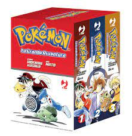
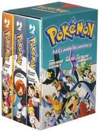
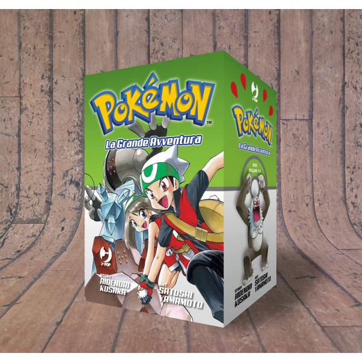
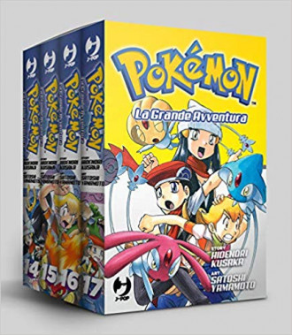
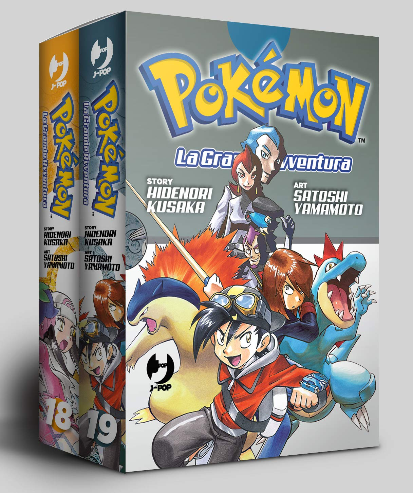

Nel 1997 iniziò la produzione di una serie di Manga dedicata al mondo pokémon che però venne interrotta dopo solo 8 capitoli.
Dal 2016 però, grazie a J-Pop, è in corso una riedizione del manga intitolato: "Pokémon - La grande avventura"
I manga usciti fino ad ora:
- Rosso, Blu e Giallo 
- Oro, Argento e Cristallo 
- Rubino e Zaffiro 
- Rosso fuoco, Verde foglia e Smeraldo 
- Diamante e Perla 
La produzione del nuovo addattamento del manga è ancora in corso! Per ora siamo fermi all'arco narrativo di Diamante e Perla!